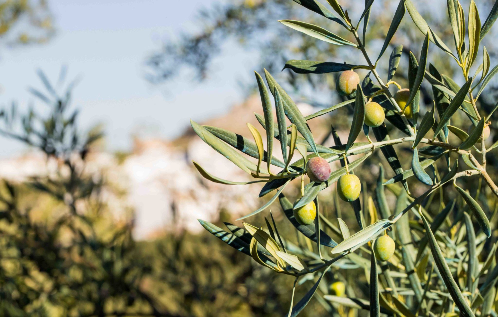
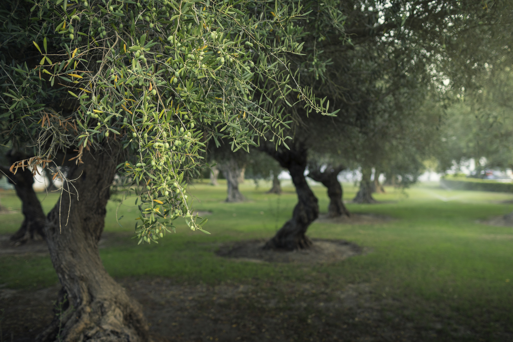
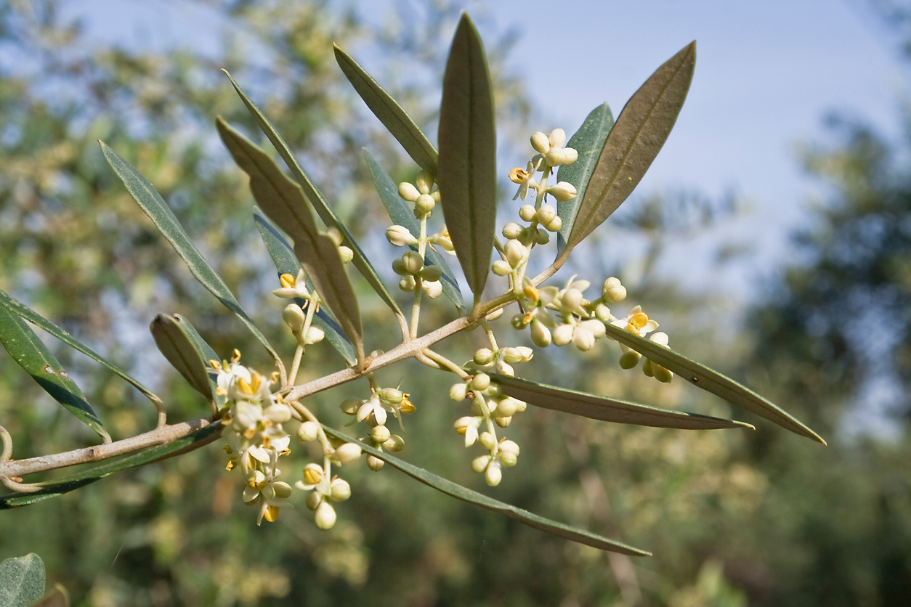
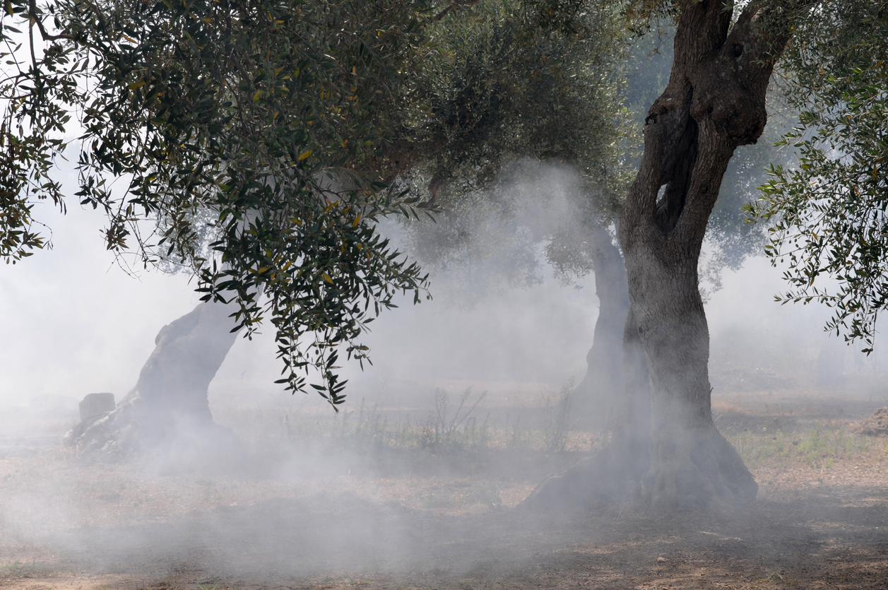
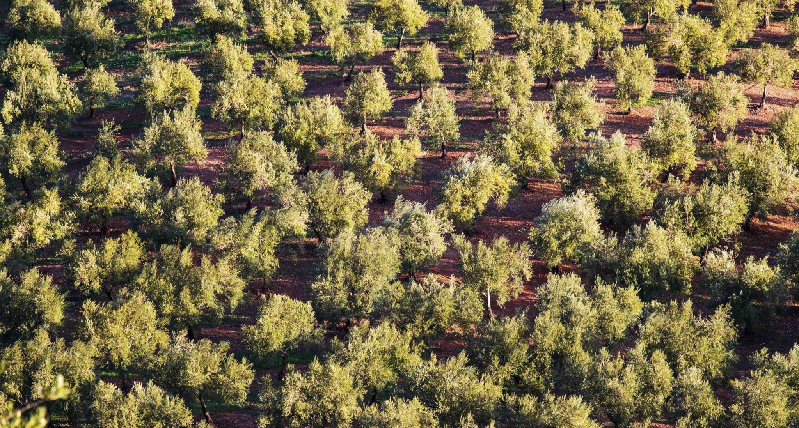
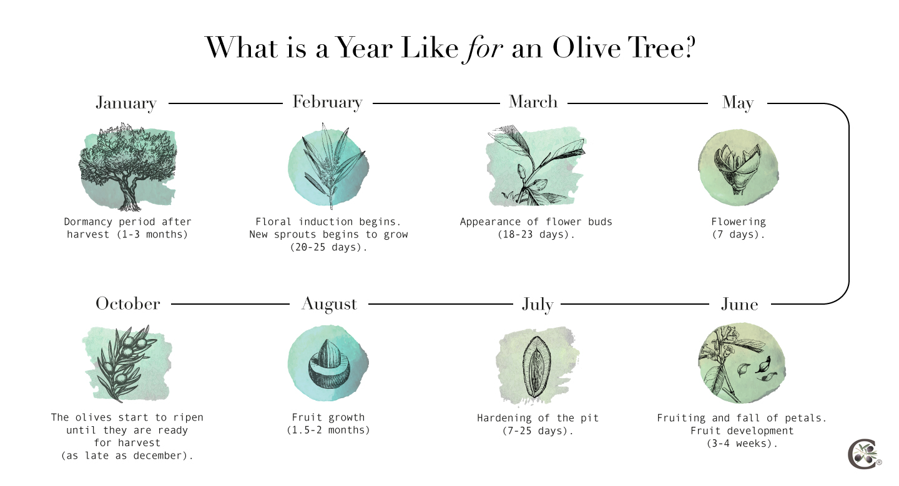

Découvrez Zwita
La sensation
des vendanges précoces
l'huile d'olive la plus fraîche du monde livrée directement
à votre porte
MAINTENANT
La sensation
des vendanges précoces
l'huile d'olive la plus fraîche du monde livrée directement
à votre porte
Le vent du nord qui souffle sur la Toscane est plutôt froid. Je le sens immédiatement sur mon visage. Je suis debout depuis un moment sur le porche, regardant les arbres de cette oliveraie à perte de vue. La rigueur de l'hiver qui approche au coin de la rue est à peine remarquée par les ouvriers qui ont commencé à récolter les olives. Ils font la même chose que les gens qui vivaient ici il y a des siècles. Avec des moyens plus nombreux et meilleurs, bien sûr, mais avec le même amour et le même respect de la nature. Leur travail donnera bientôt de l’or liquide, de l’huile d’olive extra vierge.
Les êtres humains ont énormément appris sur les oliviers au cours des derniers millénaires. Améliorer la façon dont ils prennent soin des arbres est essentiel pour augmenter le rendement et la qualité des olives. Nous n'avons pas affaire à des arbres faibles. Bien au contraire, les oliviers représentent la force et l’intelligence.
DES ARBRES FACILES À CULTIVERLorsque j'écris le mot « force », je fais référence à la capacité de l'arbre à résister aux basses températures (jusqu'à -10 °C ou 14 °F) et au gel du climat méditerranéen, ainsi qu'aux longues périodes de sécheresse en été. Même les feuilles (qui se renouvellent tous les deux ou trois ans) disposent d'un système permettant de minimiser la perte d'eau. Seul le vent peut bien souvent compliquer la tâche des fleurs.
Les oliviers peuvent atteindre entre 6 et 33 pieds et vivre des centaines d’années (voire plus de mille ans). De par leurs caractéristiques et leur capacité à résister à des conditions extrêmes, ils sont faciles à entretenir. Cela explique peut-être pourquoi il existe plus de 1 000 variétés différentes…
COMMENT SE COMPORTE UN OLIVIER EN PÉRIODE DE STRESS ?Lorsque mes doigts tapent « intelligence », je fais référence à un engagement envers la nature et donc envers l’être humain. En fonction du déroulement de l'année (pluviométrie, température, taille, nutriments), l'olivier « décide » si sa floraison sera plus ou moins intense. La clé est le stress hydraulique et nutritionnel six semaines avant la floraison. Même s’il a produit des fleurs, un olivier peut ne pas disposer des ressources nécessaires pour poursuivre le processus de floraison, ce qui entraîne des fausses couches. En d’autres termes, la croissance et le développement du fruit sont contrariés.
Un olivier produit des fleurs hermaphrodites, celles qui peuvent donner des olives, et des fleurs mâles, qui ne produisent que du pollen. Bien que le nombre de fleurs soit très élevé (dans des conditions normales), environ 2 % seulement d’entre elles deviennent des olives. Ne vous inquiétez pas : c’est largement suffisant pour obtenir l’or liquide que nous recherchons.
 LES OLIVIERS PEUVENT-ILS RÉSISTER AU FEU ?La force d’un olivier peut l’amener à vaincre le feu. J'ai été témoin du triste spectacle des oliviers en feu, mais j'ai aussi vu avec joie comment ils se sont rétablis. Elles ont une grande capacité de régénération grâce à leurs bourgeons dormants.
S’il s’agit d’un incendie partiel, il n’en faut pas beaucoup pour une récupération plus rapide. Il suffit de nettoyer ou d'enlever la partie endommagée du tronc et des branches et d'utiliser des nutriments riches et facilement assimilables par l'arbre. L’arbre lui-même fera le reste.
Si les dégâts sont plus graves, il est possible de scier l'arbre, laissant une souche juste au-dessus du niveau du sol. L'olivier repoussera grâce aux branches qui poussent à partir de la souche, qui protègent normalement le tronc du soleil en été. Une taille sera nécessaire au fil des années pour qu'il puisse devenir un arbre avec son tronc. C'est une procédure longue mais elle donnera des olives tout au long du processus.
 CARACTÉRISTIQUES DES RACINES D'UN OLIVIERLes oliviers s'enracinent facilement. Leur zone de confort est constituée d'un sol bien drainé (pas de flaques d'eau) et permettant aux racines de s'étaler, occupant une zone sous le sol aussi large que la canopée. Les racines ont besoin d’espace pour pousser vers le bas (plus de quatre pieds), avec beaucoup d’air pour permettre aux racines de s’étendre sans contraintes.
Le système racinaire se ramifie de telle manière qu'en période de pénurie d'eau, les racines recherchent les nutriments dont elles ont besoin pour survivre. C'est pourquoi un olivier a tant de racines différentes.
Je pourrais continuer encore et encore à écrire sur les oliviers. Dans la Grèce classique, par exemple, il était considéré comme un arbre sacré. Les oliviers sont souvent mentionnés dans la Bible et dans la littérature des écrivains du bassin méditerranéen. Le rameau d'olivier est le symbole de la paix. Pour ces raisons et bien d’autres, nous devons respecter ce don de la nature. Si nous jouons notre rôle, ils nous rendront de la bonne nourriture.
